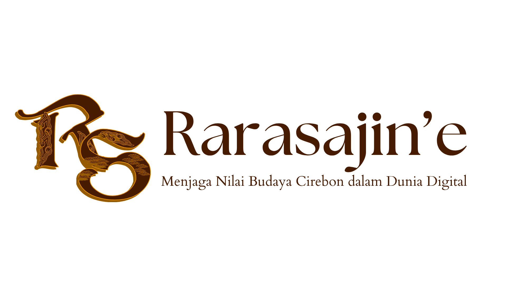

Definisi
Rarasajiné merupakan gabungan dari dua kata dalam Bahasa Cirebon, yaitu “raras†yang berarti rasa yang indah dan “ajiné†yang bermakna nilai atau kehormatan. Nama ini dipilih bukan sekadar sebagai identitas, tetapi sebagai representasi filosofi mendalam tentang keindahan rasa dan pentingnya menjaga nilai-nilai luhur budaya. Hadir sebagai ruang digital, Rarasajiné membawa makna budaya Cirebon ke dalam kehidupan modern dengan pendekatan yang visual, edukatif, dan interaktif. Platform ini menjadi jembatan antara warisan leluhur dan generasi masa kini, serta masa depan. Halaman profil ini mengupas identitas Rarasajiné melalui filosofi yang menjadi fondasi utama, visi sebagai platform budaya digital terdepan, dan misi nyata dalam pelestarian budaya. Rarasajiné bukan hanya dokumentasi budaya, tetapi sebuah perjalanan untuk menghidupkan kembali nilai-nilai Cirebon dalam ruang digital yang inspiratif.
Filosofi Logo
1. Inisial “Rs”
Tipografi Ornamental: Huruf R dan S disusun dalam bentuk dekoratif bergaya klasik, menyerupai aksara kuno atau ukiran khas Cirebon. Ini melambangkan akar tradisi yang kuat serta penghormatan terhadap warisan budaya.
Motif Batik Mega Mendung dan Ornamen Cirebonan: Pola-pola pada huruf “S†menunjukkan keterikatan dengan motif khas Cirebon, khususnya Mega Mendung yang mencerminkan filosofi kesabaran dan keteduhan. Visual ini membawa semangat budaya Cirebon ke dalam era digital.
2. Tipografi “Rarasajiné”
Font elegan namun bersahaja: Menunjukkan bahwa platform ini terbuka, inklusif, dan mengedepankan estetika lokal dengan pendekatan modern. Penulisan yang halus dan tegas mencerminkan harmoni antara keindahan dan nilai.
Tanda petik di akhir kata “Rarasajiné”: Memberikan sentuhan lokal khas dari ejaan/logat Cirebonan, menegaskan identitas daerah serta kedekatan dengan masyarakat lokal.
3. Tagline “Menjaga Nilai Budaya Cirebon dalam Dunia Digital”
Menunjukkan misi utama Rarasajiné sebagai platform pelestarian budaya—bukan sekadar dokumentasi, tetapi upaya menghidupkan kembali nilai-nilai budaya agar dapat diakses generasi masa kini melalui media digital.
4. Warna Cokelat Emas
Melambangkan kemewahan, kehangatan, dan keteguhan nilai tradisional. Warna ini memberi nuansa klasik bersahaja, menciptakan koneksi emosional dengan unsur-unsur budaya seperti kayu, tanah, dan sejarah.
Nama Rarasajiné diambil dari bahasa Jawa Cirebon yang berarti "rasa yang mendalam" atau "indahnya rasa". Filosofi ini mencerminkan semangat kami untuk menjaga dan merayakan budaya Cirebon secara otentik, menyentuh rasa, dan membangun kedekatan emosional dengan masyarakat. Kami percaya bahwa budaya tidak hanya untuk dikenang, tetapi juga untuk dirasakan, dihayati, dan diwariskan.
Visi
Menjadi platform digital budaya terdepan yang memperkenalkan, melestarikan, dan membangkitkan kembali nilai-nilai luhur Cirebon kepada generasi masa kini dan mendatang — baik lokal maupun global.
Misi
- 🌾 Mengarsipkan dan memvisualisasikan kekayaan budaya Cirebon melalui media digital yang kreatif dan informatif.
- 🧵 Menyediakan ruang bagi pelaku budaya lokal untuk berbagi karya, cerita, dan pengalaman.
- 📚 Menyebarkan edukasi seputar sejarah, adat istiadat, dan seni tradisional Cirebon secara menarik dan mudah diakses.
- 💡 Mendorong kolaborasi antar generasi untuk menjaga kontinuitas budaya di era digital.